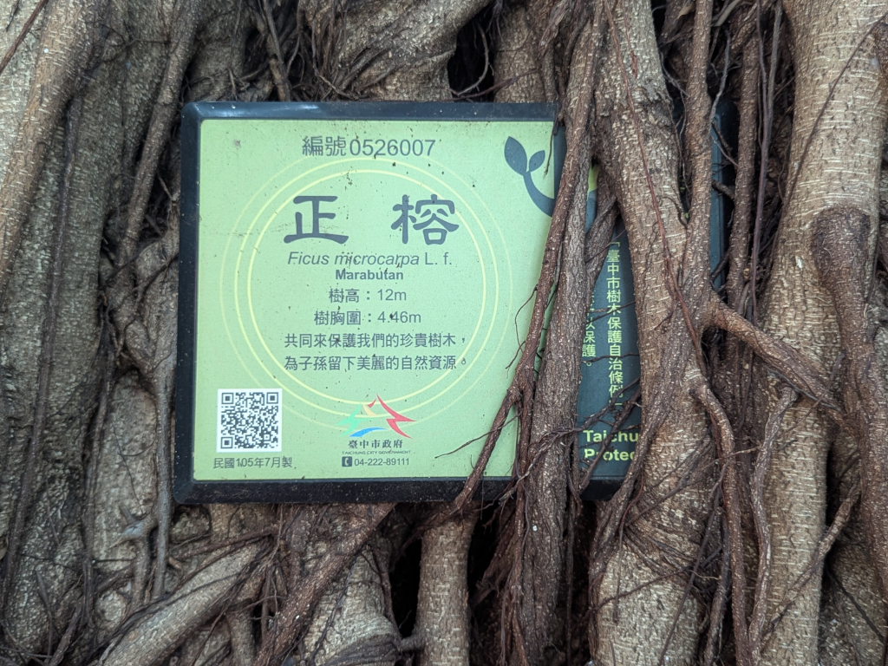

|

The plaque on the old tree in the 福德祠 (Fude Temple) courtyard, not far from Mei-O's old house.
福德祠 (Fude Temple) Tree Plaque
編號Ò526007
正榕
Ficus microcarpa L. f.
Marabutan
樹高:12m
樹胸圍:4.46m
共同來保護我們的珍貴樹木,
為子孫留下美麗的自然資源.
臺中市政府
TAICHUNG CITY GOVERNMENT
Here's the translation:
ID No. 526007
Chinese Banyan
Ficus microcarpa L. f.
Marabutan
Tree height: 12m
Circumference at breast height: 4.46m
Let us join together to protect our precious trees,
and preserve these beautiful natural resources for future generations.
Taichung City Government
The small vertical writing going down the right side reads,
臺中市樹木保護自治條例
which translates to
Taichung City Autonomous Regulations for Tree Protection
Close this window Top
|
|
|